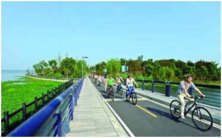
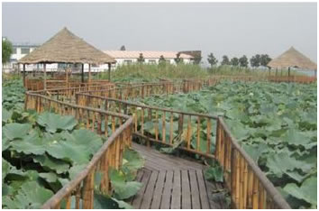

骑行俱乐部之阳澄湖 召集
秋高气爽，丹桂飘香，好一个醉人心脾的金秋十月。携三五好友，乘风骑行，岂不快哉！如此良辰美景艳阳天岂能辜负！ 好消息，骑行俱乐部开始下半年的骑行活动了。此次我们兵发素有大闸蟹之乡美称的阳澄湖，来一场美轮美奂的湖边之旅。 废话不多说，请各位仔细看一下行程安排。
时间：10月18日（周日）一天
景点：1. 阳澄湖水上公园 2. 阳澄湖半岛旅游度假区 3. 巴城
行程安排：
1. 早上七点半公司门口集合，分配坐车方案
2. 约两小时车程，到达阳澄湖捷安特车店。车店详细地址：巴解路阳澄湖水上公园停车场
3. 湖边骑行约三小时，30km左右
4. 吃中饭，闲逛，回上海。

俱乐部可以提供单车，头盔，手套，水，也会为大家购买保险，餐饮AA。
报名方式：回复本邮件，格式为：姓名-性别-身份证号-手机号。由于车店车辆有限，本次活动仅限25人，望谅解。
报名时间：截止到10月15日下午五点。
集合地点：公司门口
集合时间：10月18日上午七点半
联系方式：谢杨易：13701646157 路绪光（领队）：18964953545
注意： 1. 开车同事注意阳澄湖目的地为：巴解路阳澄湖水上公园停车场